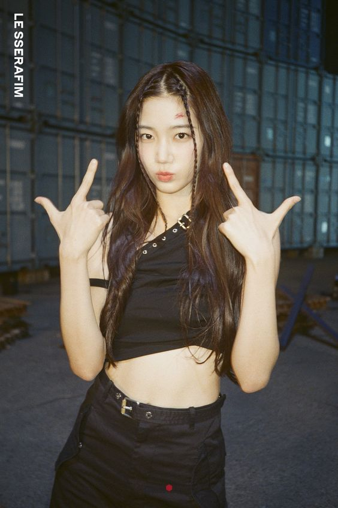

Birth Name: Nakamura Kazuha
Stage Name: Kazuha
Age: 20
Birth Date: August 9, 2003
Height: 170 cm (5'7")
MBTI: INFP
Nationality: Japanese
Early Life
Kazuha was born in Kochi but lived in Osaka from age 2-16
She has been learning ballet since the age of 3.
She attended the ballet schools, Hashimoto Sachiyo Ballet School (Osaka), Bolshoi Academy (Moscow), and Royal Ballet School (London).
Career
She is the sub-vocalist, rapper, and dancer of LE SSERAFIM.
She applied for the audition with Source Music when she was studying in the Netherlands and was scouted by the company’s CEO.
She has a training period of six months, including two months of brief training in the Netherlands.
She took Korean classes through Zoom for 2 months before coming to Korea
In 2022, she became the main model for “ETUDE,” and in 2023, she became the muse for the hair brand “LADOR.”
Kazuha has been featured in several magazines, including “ELLE,” “Marie Clarie,” “SPUR Japan,” and “BAZAAR.”
Ballet Career
She studied ballet for 15 years and is said to have taken the most elite courses in ballet after the singer Stephanie.
She has won and was placed first in many famous ballet competitions from 2015-2019.
From 2018 to 2019, she performed internationally in Europe, including Finland, Poland, and Ireland.
She lived in Amsterdam from 2020 to 2021 to pursue a degree at the Dutch National Ballet Academy in the Netherlands.
Fun Facts
LE SSERAFIM's song "Swan Song" is dedicated to hera
She auditioned with BTS’s “Dynamite” choreography and ballet video.
Kazuha is a huge fan of BLACKPINK, and her favorite member is Jisoo.
She can speak Japanese, Korean, and English.
She’s a fan of Gen Hoshino and dreams of collaborating with him someday.
Among all ballet variations, her favorite is Esmeralda, and practiced hard and won many awards for it.